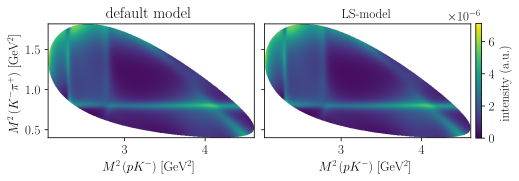
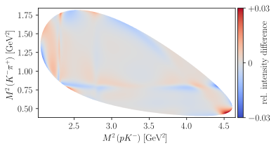

7.8. Amplitude model with LS-couplings#
7.8.1. Model inspection#
\[\displaystyle \sum_{\lambda_0^{\prime}=-1/2}^{1/2} \sum_{\lambda_1^{\prime}=-1/2}^{1/2}{A^{1}_{\lambda_0^{\prime}, \lambda_1^{\prime}, 0, 0} d^{\frac{1}{2}}_{\lambda_1^{\prime},\lambda_{1}}\left(\zeta^1_{1(1)}\right) d^{\frac{1}{2}}_{\lambda_{0},\lambda_0^{\prime}}\left(\zeta^0_{1(1)}\right) + A^{2}_{\lambda_0^{\prime}, \lambda_1^{\prime}, 0, 0} d^{\frac{1}{2}}_{\lambda_1^{\prime},\lambda_{1}}\left(\zeta^1_{2(1)}\right) d^{\frac{1}{2}}_{\lambda_{0},\lambda_0^{\prime}}\left(\zeta^0_{2(1)}\right) + A^{3}_{\lambda_0^{\prime}, \lambda_1^{\prime}, 0, 0} d^{\frac{1}{2}}_{\lambda_1^{\prime},\lambda_{1}}\left(\zeta^1_{3(1)}\right) d^{\frac{1}{2}}_{\lambda_{0},\lambda_0^{\prime}}\left(\zeta^0_{3(1)}\right)}\]
\[\begin{split}\displaystyle \begin{aligned}
A^{1}_{- \frac{1}{2}, - \frac{1}{2}} \;&=\; \sum_{\lambda_{R}=-1}^{1}{- \frac{\sqrt{10} \delta_{- \frac{1}{2}, \lambda_{R} + \frac{1}{2}} \mathcal{R}^\mathrm{BW}_{1,2}\left(\sigma_{1}\right) C^{\frac{3}{2},\lambda_{R} + \frac{1}{2}}_{1,\lambda_{R},\frac{1}{2},\frac{1}{2}} C^{\frac{1}{2},\lambda_{R} + \frac{1}{2}}_{2,0,\frac{3}{2},\lambda_{R} + \frac{1}{2}} \mathcal{H}^\mathrm{LS,production}_{K(892), 2, \frac{3}{2}} \mathcal{H}^\mathrm{decay}_{K(892), 0, 0} d^{1}_{\lambda_{R},0}\left(\theta_{23}\right)}{2}} \\
\;&+\; \sum_{\lambda_{R}=-1}^{1}{- \frac{\sqrt{2} \delta_{- \frac{1}{2}, \lambda_{R} + \frac{1}{2}} \mathcal{R}^\mathrm{BW}_{1,0}\left(\sigma_{1}\right) C^{\frac{1}{2},\lambda_{R} + \frac{1}{2}}_{0,0,\frac{1}{2},\lambda_{R} + \frac{1}{2}} C^{\frac{1}{2},\lambda_{R} + \frac{1}{2}}_{1,\lambda_{R},\frac{1}{2},\frac{1}{2}} \mathcal{H}^\mathrm{LS,production}_{K(892), 0, \frac{1}{2}} \mathcal{H}^\mathrm{decay}_{K(892), 0, 0} d^{1}_{\lambda_{R},0}\left(\theta_{23}\right)}{2}} \\
\;&+\; \sum_{\lambda_{R}=0}{- \frac{\sqrt{2} \delta_{- \frac{1}{2}, \lambda_{R} + \frac{1}{2}} \mathcal{R}^\mathrm{Bugg}\left(\sigma_{1}\right) C^{\frac{1}{2},\lambda_{R} + \frac{1}{2}}_{0,0,\frac{1}{2},\lambda_{R} + \frac{1}{2}} C^{\frac{1}{2},\lambda_{R} + \frac{1}{2}}_{0,\lambda_{R},\frac{1}{2},\frac{1}{2}} \mathcal{H}^\mathrm{LS,production}_{K(1430), 0, \frac{1}{2}} \mathcal{H}^\mathrm{decay}_{K(1430), 0, 0} d^{0}_{\lambda_{R},0}\left(\theta_{23}\right)}{2}} \\
\;&+\; \sum_{\lambda_{R}=0}{- \frac{\sqrt{2} \delta_{- \frac{1}{2}, \lambda_{R} + \frac{1}{2}} \mathcal{R}^\mathrm{Bugg}\left(\sigma_{1}\right) C^{\frac{1}{2},\lambda_{R} + \frac{1}{2}}_{0,0,\frac{1}{2},\lambda_{R} + \frac{1}{2}} C^{\frac{1}{2},\lambda_{R} + \frac{1}{2}}_{0,\lambda_{R},\frac{1}{2},\frac{1}{2}} \mathcal{H}^\mathrm{LS,production}_{K(700), 0, \frac{1}{2}} \mathcal{H}^\mathrm{decay}_{K(700), 0, 0} d^{0}_{\lambda_{R},0}\left(\theta_{23}\right)}{2}} \\
\;&+\; \sum_{\lambda_{R}=-1}^{1}{- \frac{\sqrt{6} \delta_{- \frac{1}{2}, \lambda_{R} + \frac{1}{2}} \mathcal{R}^\mathrm{BW}_{1,1}\left(\sigma_{1}\right) C^{\frac{1}{2},\lambda_{R} + \frac{1}{2}}_{1,0,\frac{1}{2},\lambda_{R} + \frac{1}{2}} C^{\frac{1}{2},\lambda_{R} + \frac{1}{2}}_{1,\lambda_{R},\frac{1}{2},\frac{1}{2}} \mathcal{H}^\mathrm{LS,production}_{K(892), 1, \frac{1}{2}} \mathcal{H}^\mathrm{decay}_{K(892), 0, 0} d^{1}_{\lambda_{R},0}\left(\theta_{23}\right)}{2}} \\
\;&+\; \sum_{\lambda_{R}=-1}^{1}{- \frac{\sqrt{6} \delta_{- \frac{1}{2}, \lambda_{R} + \frac{1}{2}} \mathcal{R}^\mathrm{BW}_{1,1}\left(\sigma_{1}\right) C^{\frac{1}{2},\lambda_{R} + \frac{1}{2}}_{1,0,\frac{3}{2},\lambda_{R} + \frac{1}{2}} C^{\frac{3}{2},\lambda_{R} + \frac{1}{2}}_{1,\lambda_{R},\frac{1}{2},\frac{1}{2}} \mathcal{H}^\mathrm{LS,production}_{K(892), 1, \frac{3}{2}} \mathcal{H}^\mathrm{decay}_{K(892), 0, 0} d^{1}_{\lambda_{R},0}\left(\theta_{23}\right)}{2}} \\
\;&+\; \sum_{\lambda_{R}=0}{- \frac{\sqrt{6} \delta_{- \frac{1}{2}, \lambda_{R} + \frac{1}{2}} \mathcal{R}^\mathrm{Bugg}\left(\sigma_{1}\right) C^{\frac{1}{2},\lambda_{R} + \frac{1}{2}}_{0,\lambda_{R},\frac{1}{2},\frac{1}{2}} C^{\frac{1}{2},\lambda_{R} + \frac{1}{2}}_{1,0,\frac{1}{2},\lambda_{R} + \frac{1}{2}} \mathcal{H}^\mathrm{LS,production}_{K(1430), 1, \frac{1}{2}} \mathcal{H}^\mathrm{decay}_{K(1430), 0, 0} d^{0}_{\lambda_{R},0}\left(\theta_{23}\right)}{2}} \\
\;&+\; \sum_{\lambda_{R}=0}{- \frac{\sqrt{6} \delta_{- \frac{1}{2}, \lambda_{R} + \frac{1}{2}} \mathcal{R}^\mathrm{Bugg}\left(\sigma_{1}\right) C^{\frac{1}{2},\lambda_{R} + \frac{1}{2}}_{0,\lambda_{R},\frac{1}{2},\frac{1}{2}} C^{\frac{1}{2},\lambda_{R} + \frac{1}{2}}_{1,0,\frac{1}{2},\lambda_{R} + \frac{1}{2}} \mathcal{H}^\mathrm{LS,production}_{K(700), 1, \frac{1}{2}} \mathcal{H}^\mathrm{decay}_{K(700), 0, 0} d^{0}_{\lambda_{R},0}\left(\theta_{23}\right)}{2}} \\
A^{2}_{- \frac{1}{2}, - \frac{1}{2}} \;&=\; \sum_{\lambda_{R}=-3/2}^{3/2}{- \frac{\sqrt{10} \delta_{- \frac{1}{2} \lambda_{R}} \mathcal{R}^\mathrm{BW}_{2,2}\left(\sigma_{2}\right) C^{\frac{3}{2},\lambda_{R}}_{\frac{3}{2},\lambda_{R},0,0} C^{\frac{1}{2},\lambda_{R}}_{2,0,\frac{3}{2},\lambda_{R}} \mathcal{H}^\mathrm{LS,production}_{\Lambda(1520), 2, \frac{3}{2}} \mathcal{H}^\mathrm{decay}_{\Lambda(1520), 0, - \frac{1}{2}} d^{\frac{3}{2}}_{\lambda_{R},\frac{1}{2}}\left(\theta_{31}\right)}{2}} \\
\;&+\; \sum_{\lambda_{R}=-3/2}^{3/2}{- \frac{\sqrt{10} \delta_{- \frac{1}{2} \lambda_{R}} \mathcal{R}^\mathrm{BW}_{2,2}\left(\sigma_{2}\right) C^{\frac{3}{2},\lambda_{R}}_{\frac{3}{2},\lambda_{R},0,0} C^{\frac{1}{2},\lambda_{R}}_{2,0,\frac{3}{2},\lambda_{R}} \mathcal{H}^\mathrm{LS,production}_{\Lambda(1690), 2, \frac{3}{2}} \mathcal{H}^\mathrm{decay}_{\Lambda(1690), 0, - \frac{1}{2}} d^{\frac{3}{2}}_{\lambda_{R},\frac{1}{2}}\left(\theta_{31}\right)}{2}} \\
\;&+\; \sum_{\lambda_{R}=-1/2}^{1/2}{- \frac{\sqrt{2} \delta_{- \frac{1}{2} \lambda_{R}} \mathcal{R}^\mathrm{BW}_{1,0}\left(\sigma_{2}\right) C^{\frac{1}{2},\lambda_{R}}_{0,0,\frac{1}{2},\lambda_{R}} C^{\frac{1}{2},\lambda_{R}}_{\frac{1}{2},\lambda_{R},0,0} \mathcal{H}^\mathrm{LS,production}_{\Lambda(1600), 0, \frac{1}{2}} \mathcal{H}^\mathrm{decay}_{\Lambda(1600), 0, - \frac{1}{2}} d^{\frac{1}{2}}_{\lambda_{R},\frac{1}{2}}\left(\theta_{31}\right)}{2}} \\
\;&+\; \sum_{\lambda_{R}=-1/2}^{1/2}{- \frac{\sqrt{2} \delta_{- \frac{1}{2} \lambda_{R}} \mathcal{R}^\mathrm{BW}_{0,0}\left(\sigma_{2}\right) C^{\frac{1}{2},\lambda_{R}}_{0,0,\frac{1}{2},\lambda_{R}} C^{\frac{1}{2},\lambda_{R}}_{\frac{1}{2},\lambda_{R},0,0} \mathcal{H}^\mathrm{LS,production}_{\Lambda(1670), 0, \frac{1}{2}} \mathcal{H}^\mathrm{decay}_{\Lambda(1670), 0, - \frac{1}{2}} d^{\frac{1}{2}}_{\lambda_{R},\frac{1}{2}}\left(\theta_{31}\right)}{2}} \\
\;&+\; \sum_{\lambda_{R}=-1/2}^{1/2}{- \frac{\sqrt{2} \delta_{- \frac{1}{2} \lambda_{R}} \mathcal{R}^\mathrm{BW}_{0,0}\left(\sigma_{2}\right) C^{\frac{1}{2},\lambda_{R}}_{0,0,\frac{1}{2},\lambda_{R}} C^{\frac{1}{2},\lambda_{R}}_{\frac{1}{2},\lambda_{R},0,0} \mathcal{H}^\mathrm{LS,production}_{\Lambda(2000), 0, \frac{1}{2}} \mathcal{H}^\mathrm{decay}_{\Lambda(2000), 0, - \frac{1}{2}} d^{\frac{1}{2}}_{\lambda_{R},\frac{1}{2}}\left(\theta_{31}\right)}{2}} \\
\;&+\; \sum_{\lambda_{R}=-3/2}^{3/2}{- \frac{\sqrt{6} \delta_{- \frac{1}{2} \lambda_{R}} \mathcal{R}^\mathrm{BW}_{2,1}\left(\sigma_{2}\right) C^{\frac{1}{2},\lambda_{R}}_{1,0,\frac{3}{2},\lambda_{R}} C^{\frac{3}{2},\lambda_{R}}_{\frac{3}{2},\lambda_{R},0,0} \mathcal{H}^\mathrm{LS,production}_{\Lambda(1520), 1, \frac{3}{2}} \mathcal{H}^\mathrm{decay}_{\Lambda(1520), 0, - \frac{1}{2}} d^{\frac{3}{2}}_{\lambda_{R},\frac{1}{2}}\left(\theta_{31}\right)}{2}} \\
\;&+\; \sum_{\lambda_{R}=-1/2}^{1/2}{- \frac{\sqrt{6} \delta_{- \frac{1}{2} \lambda_{R}} \mathcal{R}^\mathrm{BW}_{1,1}\left(\sigma_{2}\right) C^{\frac{1}{2},\lambda_{R}}_{\frac{1}{2},\lambda_{R},0,0} C^{\frac{1}{2},\lambda_{R}}_{1,0,\frac{1}{2},\lambda_{R}} \mathcal{H}^\mathrm{LS,production}_{\Lambda(1600), 1, \frac{1}{2}} \mathcal{H}^\mathrm{decay}_{\Lambda(1600), 0, - \frac{1}{2}} d^{\frac{1}{2}}_{\lambda_{R},\frac{1}{2}}\left(\theta_{31}\right)}{2}} \\
\;&+\; \sum_{\lambda_{R}=-1/2}^{1/2}{- \frac{\sqrt{6} \delta_{- \frac{1}{2} \lambda_{R}} \mathcal{R}^\mathrm{BW}_{0,1}\left(\sigma_{2}\right) C^{\frac{1}{2},\lambda_{R}}_{\frac{1}{2},\lambda_{R},0,0} C^{\frac{1}{2},\lambda_{R}}_{1,0,\frac{1}{2},\lambda_{R}} \mathcal{H}^\mathrm{LS,production}_{\Lambda(1670), 1, \frac{1}{2}} \mathcal{H}^\mathrm{decay}_{\Lambda(1670), 0, - \frac{1}{2}} d^{\frac{1}{2}}_{\lambda_{R},\frac{1}{2}}\left(\theta_{31}\right)}{2}} \\
\;&+\; \sum_{\lambda_{R}=-3/2}^{3/2}{- \frac{\sqrt{6} \delta_{- \frac{1}{2} \lambda_{R}} \mathcal{R}^\mathrm{BW}_{2,1}\left(\sigma_{2}\right) C^{\frac{1}{2},\lambda_{R}}_{1,0,\frac{3}{2},\lambda_{R}} C^{\frac{3}{2},\lambda_{R}}_{\frac{3}{2},\lambda_{R},0,0} \mathcal{H}^\mathrm{LS,production}_{\Lambda(1690), 1, \frac{3}{2}} \mathcal{H}^\mathrm{decay}_{\Lambda(1690), 0, - \frac{1}{2}} d^{\frac{3}{2}}_{\lambda_{R},\frac{1}{2}}\left(\theta_{31}\right)}{2}} \\
\;&+\; \sum_{\lambda_{R}=-1/2}^{1/2}{- \frac{\sqrt{6} \delta_{- \frac{1}{2} \lambda_{R}} \mathcal{R}^\mathrm{BW}_{0,1}\left(\sigma_{2}\right) C^{\frac{1}{2},\lambda_{R}}_{\frac{1}{2},\lambda_{R},0,0} C^{\frac{1}{2},\lambda_{R}}_{1,0,\frac{1}{2},\lambda_{R}} \mathcal{H}^\mathrm{LS,production}_{\Lambda(2000), 1, \frac{1}{2}} \mathcal{H}^\mathrm{decay}_{\Lambda(2000), 0, - \frac{1}{2}} d^{\frac{1}{2}}_{\lambda_{R},\frac{1}{2}}\left(\theta_{31}\right)}{2}} \\
\;&+\; \sum_{\lambda_{R}=-1/2}^{1/2}{- \frac{\sqrt{2} \delta_{- \frac{1}{2} \lambda_{R}} C^{\frac{1}{2},\lambda_{R}}_{0,0,\frac{1}{2},\lambda_{R}} C^{\frac{1}{2},\lambda_{R}}_{\frac{1}{2},\lambda_{R},0,0} \mathcal{R}^\mathrm{Flatté}\left(\sigma_{2}\right) \mathcal{F}_{0}\left(m_{0}^{2}, \sqrt{\sigma_{2}}, m_{2}\right) \mathcal{H}^\mathrm{LS,production}_{\Lambda(1405), 0, \frac{1}{2}} \mathcal{H}^\mathrm{decay}_{\Lambda(1405), 0, - \frac{1}{2}} d^{\frac{1}{2}}_{\lambda_{R},\frac{1}{2}}\left(\theta_{31}\right)}{2 \mathcal{F}_{0}\left(m_{0}^{2}, m_{\Lambda(1405)}, m_{2}\right)}} \\
\;&+\; \sum_{\lambda_{R}=-1/2}^{1/2}{- \frac{\sqrt{6} \delta_{- \frac{1}{2} \lambda_{R}} C^{\frac{1}{2},\lambda_{R}}_{\frac{1}{2},\lambda_{R},0,0} C^{\frac{1}{2},\lambda_{R}}_{1,0,\frac{1}{2},\lambda_{R}} \mathcal{R}^\mathrm{Flatté}\left(\sigma_{2}\right) \mathcal{F}_{1}\left(m_{0}^{2}, \sqrt{\sigma_{2}}, m_{2}\right) \mathcal{H}^\mathrm{LS,production}_{\Lambda(1405), 1, \frac{1}{2}} \mathcal{H}^\mathrm{decay}_{\Lambda(1405), 0, - \frac{1}{2}} d^{\frac{1}{2}}_{\lambda_{R},\frac{1}{2}}\left(\theta_{31}\right)}{2 \mathcal{F}_{1}\left(m_{0}^{2}, m_{\Lambda(1405)}, m_{2}\right)}} \\
A^{3}_{- \frac{1}{2}, - \frac{1}{2}} \;&=\; \sum_{\lambda_{R}=-3/2}^{3/2}{\frac{\sqrt{10} \delta_{- \frac{1}{2} \lambda_{R}} \mathcal{R}^\mathrm{BW}_{1,2}\left(\sigma_{3}\right) C^{\frac{3}{2},\lambda_{R}}_{\frac{3}{2},\lambda_{R},0,0} C^{\frac{1}{2},\lambda_{R}}_{2,0,\frac{3}{2},\lambda_{R}} \mathcal{H}^\mathrm{LS,production}_{\Delta(1232), 2, \frac{3}{2}} \mathcal{H}^\mathrm{decay}_{\Delta(1232), - \frac{1}{2}, 0} d^{\frac{3}{2}}_{\lambda_{R},- \frac{1}{2}}\left(\theta_{12}\right)}{2}} \\
\;&+\; \sum_{\lambda_{R}=-3/2}^{3/2}{\frac{\sqrt{10} \delta_{- \frac{1}{2} \lambda_{R}} \mathcal{R}^\mathrm{BW}_{1,2}\left(\sigma_{3}\right) C^{\frac{3}{2},\lambda_{R}}_{\frac{3}{2},\lambda_{R},0,0} C^{\frac{1}{2},\lambda_{R}}_{2,0,\frac{3}{2},\lambda_{R}} \mathcal{H}^\mathrm{LS,production}_{\Delta(1600), 2, \frac{3}{2}} \mathcal{H}^\mathrm{decay}_{\Delta(1600), - \frac{1}{2}, 0} d^{\frac{3}{2}}_{\lambda_{R},- \frac{1}{2}}\left(\theta_{12}\right)}{2}} \\
\;&+\; \sum_{\lambda_{R}=-3/2}^{3/2}{\frac{\sqrt{10} \delta_{- \frac{1}{2} \lambda_{R}} \mathcal{R}^\mathrm{BW}_{2,2}\left(\sigma_{3}\right) C^{\frac{3}{2},\lambda_{R}}_{\frac{3}{2},\lambda_{R},0,0} C^{\frac{1}{2},\lambda_{R}}_{2,0,\frac{3}{2},\lambda_{R}} \mathcal{H}^\mathrm{LS,production}_{\Delta(1700), 2, \frac{3}{2}} \mathcal{H}^\mathrm{decay}_{\Delta(1700), - \frac{1}{2}, 0} d^{\frac{3}{2}}_{\lambda_{R},- \frac{1}{2}}\left(\theta_{12}\right)}{2}} \\
\;&+\; \sum_{\lambda_{R}=-3/2}^{3/2}{\frac{\sqrt{6} \delta_{- \frac{1}{2} \lambda_{R}} \mathcal{R}^\mathrm{BW}_{1,1}\left(\sigma_{3}\right) C^{\frac{1}{2},\lambda_{R}}_{1,0,\frac{3}{2},\lambda_{R}} C^{\frac{3}{2},\lambda_{R}}_{\frac{3}{2},\lambda_{R},0,0} \mathcal{H}^\mathrm{LS,production}_{\Delta(1232), 1, \frac{3}{2}} \mathcal{H}^\mathrm{decay}_{\Delta(1232), - \frac{1}{2}, 0} d^{\frac{3}{2}}_{\lambda_{R},- \frac{1}{2}}\left(\theta_{12}\right)}{2}} \\
\;&+\; \sum_{\lambda_{R}=-3/2}^{3/2}{\frac{\sqrt{6} \delta_{- \frac{1}{2} \lambda_{R}} \mathcal{R}^\mathrm{BW}_{1,1}\left(\sigma_{3}\right) C^{\frac{1}{2},\lambda_{R}}_{1,0,\frac{3}{2},\lambda_{R}} C^{\frac{3}{2},\lambda_{R}}_{\frac{3}{2},\lambda_{R},0,0} \mathcal{H}^\mathrm{LS,production}_{\Delta(1600), 1, \frac{3}{2}} \mathcal{H}^\mathrm{decay}_{\Delta(1600), - \frac{1}{2}, 0} d^{\frac{3}{2}}_{\lambda_{R},- \frac{1}{2}}\left(\theta_{12}\right)}{2}} \\
\;&+\; \sum_{\lambda_{R}=-3/2}^{3/2}{\frac{\sqrt{6} \delta_{- \frac{1}{2} \lambda_{R}} \mathcal{R}^\mathrm{BW}_{2,1}\left(\sigma_{3}\right) C^{\frac{1}{2},\lambda_{R}}_{1,0,\frac{3}{2},\lambda_{R}} C^{\frac{3}{2},\lambda_{R}}_{\frac{3}{2},\lambda_{R},0,0} \mathcal{H}^\mathrm{LS,production}_{\Delta(1700), 1, \frac{3}{2}} \mathcal{H}^\mathrm{decay}_{\Delta(1700), - \frac{1}{2}, 0} d^{\frac{3}{2}}_{\lambda_{R},- \frac{1}{2}}\left(\theta_{12}\right)}{2}} \\
A^{1}_{- \frac{1}{2}, \frac{1}{2}} \;&=\; \sum_{\lambda_{R}=-1}^{1}{\frac{\sqrt{10} \delta_{- \frac{1}{2}, \lambda_{R} - \frac{1}{2}} \mathcal{R}^\mathrm{BW}_{1,2}\left(\sigma_{1}\right) C^{\frac{3}{2},\lambda_{R} - \frac{1}{2}}_{1,\lambda_{R},\frac{1}{2},- \frac{1}{2}} C^{\frac{1}{2},\lambda_{R} - \frac{1}{2}}_{2,0,\frac{3}{2},\lambda_{R} - \frac{1}{2}} \mathcal{H}^\mathrm{LS,production}_{K(892), 2, \frac{3}{2}} \mathcal{H}^\mathrm{decay}_{K(892), 0, 0} d^{1}_{\lambda_{R},0}\left(\theta_{23}\right)}{2}} \\
\;&+\; \sum_{\lambda_{R}=-1}^{1}{\frac{\sqrt{2} \delta_{- \frac{1}{2}, \lambda_{R} - \frac{1}{2}} \mathcal{R}^\mathrm{BW}_{1,0}\left(\sigma_{1}\right) C^{\frac{1}{2},\lambda_{R} - \frac{1}{2}}_{0,0,\frac{1}{2},\lambda_{R} - \frac{1}{2}} C^{\frac{1}{2},\lambda_{R} - \frac{1}{2}}_{1,\lambda_{R},\frac{1}{2},- \frac{1}{2}} \mathcal{H}^\mathrm{LS,production}_{K(892), 0, \frac{1}{2}} \mathcal{H}^\mathrm{decay}_{K(892), 0, 0} d^{1}_{\lambda_{R},0}\left(\theta_{23}\right)}{2}} \\
\;&+\; \sum_{\lambda_{R}=0}{\frac{\sqrt{2} \delta_{- \frac{1}{2}, \lambda_{R} - \frac{1}{2}} \mathcal{R}^\mathrm{Bugg}\left(\sigma_{1}\right) C^{\frac{1}{2},\lambda_{R} - \frac{1}{2}}_{0,0,\frac{1}{2},\lambda_{R} - \frac{1}{2}} C^{\frac{1}{2},\lambda_{R} - \frac{1}{2}}_{0,\lambda_{R},\frac{1}{2},- \frac{1}{2}} \mathcal{H}^\mathrm{LS,production}_{K(1430), 0, \frac{1}{2}} \mathcal{H}^\mathrm{decay}_{K(1430), 0, 0} d^{0}_{\lambda_{R},0}\left(\theta_{23}\right)}{2}} \\
\;&+\; \sum_{\lambda_{R}=0}{\frac{\sqrt{2} \delta_{- \frac{1}{2}, \lambda_{R} - \frac{1}{2}} \mathcal{R}^\mathrm{Bugg}\left(\sigma_{1}\right) C^{\frac{1}{2},\lambda_{R} - \frac{1}{2}}_{0,0,\frac{1}{2},\lambda_{R} - \frac{1}{2}} C^{\frac{1}{2},\lambda_{R} - \frac{1}{2}}_{0,\lambda_{R},\frac{1}{2},- \frac{1}{2}} \mathcal{H}^\mathrm{LS,production}_{K(700), 0, \frac{1}{2}} \mathcal{H}^\mathrm{decay}_{K(700), 0, 0} d^{0}_{\lambda_{R},0}\left(\theta_{23}\right)}{2}} \\
\;&+\; \sum_{\lambda_{R}=-1}^{1}{\frac{\sqrt{6} \delta_{- \frac{1}{2}, \lambda_{R} - \frac{1}{2}} \mathcal{R}^\mathrm{BW}_{1,1}\left(\sigma_{1}\right) C^{\frac{1}{2},\lambda_{R} - \frac{1}{2}}_{1,0,\frac{1}{2},\lambda_{R} - \frac{1}{2}} C^{\frac{1}{2},\lambda_{R} - \frac{1}{2}}_{1,\lambda_{R},\frac{1}{2},- \frac{1}{2}} \mathcal{H}^\mathrm{LS,production}_{K(892), 1, \frac{1}{2}} \mathcal{H}^\mathrm{decay}_{K(892), 0, 0} d^{1}_{\lambda_{R},0}\left(\theta_{23}\right)}{2}} \\
\;&+\; \sum_{\lambda_{R}=-1}^{1}{\frac{\sqrt{6} \delta_{- \frac{1}{2}, \lambda_{R} - \frac{1}{2}} \mathcal{R}^\mathrm{BW}_{1,1}\left(\sigma_{1}\right) C^{\frac{1}{2},\lambda_{R} - \frac{1}{2}}_{1,0,\frac{3}{2},\lambda_{R} - \frac{1}{2}} C^{\frac{3}{2},\lambda_{R} - \frac{1}{2}}_{1,\lambda_{R},\frac{1}{2},- \frac{1}{2}} \mathcal{H}^\mathrm{LS,production}_{K(892), 1, \frac{3}{2}} \mathcal{H}^\mathrm{decay}_{K(892), 0, 0} d^{1}_{\lambda_{R},0}\left(\theta_{23}\right)}{2}} \\
\;&+\; \sum_{\lambda_{R}=0}{\frac{\sqrt{6} \delta_{- \frac{1}{2}, \lambda_{R} - \frac{1}{2}} \mathcal{R}^\mathrm{Bugg}\left(\sigma_{1}\right) C^{\frac{1}{2},\lambda_{R} - \frac{1}{2}}_{0,\lambda_{R},\frac{1}{2},- \frac{1}{2}} C^{\frac{1}{2},\lambda_{R} - \frac{1}{2}}_{1,0,\frac{1}{2},\lambda_{R} - \frac{1}{2}} \mathcal{H}^\mathrm{LS,production}_{K(1430), 1, \frac{1}{2}} \mathcal{H}^\mathrm{decay}_{K(1430), 0, 0} d^{0}_{\lambda_{R},0}\left(\theta_{23}\right)}{2}} \\
\;&+\; \sum_{\lambda_{R}=0}{\frac{\sqrt{6} \delta_{- \frac{1}{2}, \lambda_{R} - \frac{1}{2}} \mathcal{R}^\mathrm{Bugg}\left(\sigma_{1}\right) C^{\frac{1}{2},\lambda_{R} - \frac{1}{2}}_{0,\lambda_{R},\frac{1}{2},- \frac{1}{2}} C^{\frac{1}{2},\lambda_{R} - \frac{1}{2}}_{1,0,\frac{1}{2},\lambda_{R} - \frac{1}{2}} \mathcal{H}^\mathrm{LS,production}_{K(700), 1, \frac{1}{2}} \mathcal{H}^\mathrm{decay}_{K(700), 0, 0} d^{0}_{\lambda_{R},0}\left(\theta_{23}\right)}{2}} \\
A^{2}_{- \frac{1}{2}, \frac{1}{2}} \;&=\; \sum_{\lambda_{R}=-3/2}^{3/2}{\frac{\sqrt{10} \delta_{- \frac{1}{2} \lambda_{R}} \mathcal{R}^\mathrm{BW}_{2,2}\left(\sigma_{2}\right) C^{\frac{3}{2},\lambda_{R}}_{\frac{3}{2},\lambda_{R},0,0} C^{\frac{1}{2},\lambda_{R}}_{2,0,\frac{3}{2},\lambda_{R}} \mathcal{H}^\mathrm{LS,production}_{\Lambda(1520), 2, \frac{3}{2}} \mathcal{H}^\mathrm{decay}_{\Lambda(1520), 0, \frac{1}{2}} d^{\frac{3}{2}}_{\lambda_{R},- \frac{1}{2}}\left(\theta_{31}\right)}{2}} \\
\;&+\; \sum_{\lambda_{R}=-3/2}^{3/2}{\frac{\sqrt{10} \delta_{- \frac{1}{2} \lambda_{R}} \mathcal{R}^\mathrm{BW}_{2,2}\left(\sigma_{2}\right) C^{\frac{3}{2},\lambda_{R}}_{\frac{3}{2},\lambda_{R},0,0} C^{\frac{1}{2},\lambda_{R}}_{2,0,\frac{3}{2},\lambda_{R}} \mathcal{H}^\mathrm{LS,production}_{\Lambda(1690), 2, \frac{3}{2}} \mathcal{H}^\mathrm{decay}_{\Lambda(1690), 0, \frac{1}{2}} d^{\frac{3}{2}}_{\lambda_{R},- \frac{1}{2}}\left(\theta_{31}\right)}{2}} \\
\;&+\; \sum_{\lambda_{R}=-1/2}^{1/2}{\frac{\sqrt{2} \delta_{- \frac{1}{2} \lambda_{R}} \mathcal{R}^\mathrm{BW}_{1,0}\left(\sigma_{2}\right) C^{\frac{1}{2},\lambda_{R}}_{0,0,\frac{1}{2},\lambda_{R}} C^{\frac{1}{2},\lambda_{R}}_{\frac{1}{2},\lambda_{R},0,0} \mathcal{H}^\mathrm{LS,production}_{\Lambda(1600), 0, \frac{1}{2}} \mathcal{H}^\mathrm{decay}_{\Lambda(1600), 0, \frac{1}{2}} d^{\frac{1}{2}}_{\lambda_{R},- \frac{1}{2}}\left(\theta_{31}\right)}{2}} \\
\;&+\; \sum_{\lambda_{R}=-1/2}^{1/2}{\frac{\sqrt{2} \delta_{- \frac{1}{2} \lambda_{R}} \mathcal{R}^\mathrm{BW}_{0,0}\left(\sigma_{2}\right) C^{\frac{1}{2},\lambda_{R}}_{0,0,\frac{1}{2},\lambda_{R}} C^{\frac{1}{2},\lambda_{R}}_{\frac{1}{2},\lambda_{R},0,0} \mathcal{H}^\mathrm{LS,production}_{\Lambda(1670), 0, \frac{1}{2}} \mathcal{H}^\mathrm{decay}_{\Lambda(1670), 0, \frac{1}{2}} d^{\frac{1}{2}}_{\lambda_{R},- \frac{1}{2}}\left(\theta_{31}\right)}{2}} \\
\;&+\; \sum_{\lambda_{R}=-1/2}^{1/2}{\frac{\sqrt{2} \delta_{- \frac{1}{2} \lambda_{R}} \mathcal{R}^\mathrm{BW}_{0,0}\left(\sigma_{2}\right) C^{\frac{1}{2},\lambda_{R}}_{0,0,\frac{1}{2},\lambda_{R}} C^{\frac{1}{2},\lambda_{R}}_{\frac{1}{2},\lambda_{R},0,0} \mathcal{H}^\mathrm{LS,production}_{\Lambda(2000), 0, \frac{1}{2}} \mathcal{H}^\mathrm{decay}_{\Lambda(2000), 0, \frac{1}{2}} d^{\frac{1}{2}}_{\lambda_{R},- \frac{1}{2}}\left(\theta_{31}\right)}{2}} \\
\;&+\; \sum_{\lambda_{R}=-3/2}^{3/2}{\frac{\sqrt{6} \delta_{- \frac{1}{2} \lambda_{R}} \mathcal{R}^\mathrm{BW}_{2,1}\left(\sigma_{2}\right) C^{\frac{1}{2},\lambda_{R}}_{1,0,\frac{3}{2},\lambda_{R}} C^{\frac{3}{2},\lambda_{R}}_{\frac{3}{2},\lambda_{R},0,0} \mathcal{H}^\mathrm{LS,production}_{\Lambda(1520), 1, \frac{3}{2}} \mathcal{H}^\mathrm{decay}_{\Lambda(1520), 0, \frac{1}{2}} d^{\frac{3}{2}}_{\lambda_{R},- \frac{1}{2}}\left(\theta_{31}\right)}{2}} \\
\;&+\; \sum_{\lambda_{R}=-1/2}^{1/2}{\frac{\sqrt{6} \delta_{- \frac{1}{2} \lambda_{R}} \mathcal{R}^\mathrm{BW}_{1,1}\left(\sigma_{2}\right) C^{\frac{1}{2},\lambda_{R}}_{\frac{1}{2},\lambda_{R},0,0} C^{\frac{1}{2},\lambda_{R}}_{1,0,\frac{1}{2},\lambda_{R}} \mathcal{H}^\mathrm{LS,production}_{\Lambda(1600), 1, \frac{1}{2}} \mathcal{H}^\mathrm{decay}_{\Lambda(1600), 0, \frac{1}{2}} d^{\frac{1}{2}}_{\lambda_{R},- \frac{1}{2}}\left(\theta_{31}\right)}{2}} \\
\;&+\; \sum_{\lambda_{R}=-1/2}^{1/2}{\frac{\sqrt{6} \delta_{- \frac{1}{2} \lambda_{R}} \mathcal{R}^\mathrm{BW}_{0,1}\left(\sigma_{2}\right) C^{\frac{1}{2},\lambda_{R}}_{\frac{1}{2},\lambda_{R},0,0} C^{\frac{1}{2},\lambda_{R}}_{1,0,\frac{1}{2},\lambda_{R}} \mathcal{H}^\mathrm{LS,production}_{\Lambda(1670), 1, \frac{1}{2}} \mathcal{H}^\mathrm{decay}_{\Lambda(1670), 0, \frac{1}{2}} d^{\frac{1}{2}}_{\lambda_{R},- \frac{1}{2}}\left(\theta_{31}\right)}{2}} \\
\;&+\; \sum_{\lambda_{R}=-3/2}^{3/2}{\frac{\sqrt{6} \delta_{- \frac{1}{2} \lambda_{R}} \mathcal{R}^\mathrm{BW}_{2,1}\left(\sigma_{2}\right) C^{\frac{1}{2},\lambda_{R}}_{1,0,\frac{3}{2},\lambda_{R}} C^{\frac{3}{2},\lambda_{R}}_{\frac{3}{2},\lambda_{R},0,0} \mathcal{H}^\mathrm{LS,production}_{\Lambda(1690), 1, \frac{3}{2}} \mathcal{H}^\mathrm{decay}_{\Lambda(1690), 0, \frac{1}{2}} d^{\frac{3}{2}}_{\lambda_{R},- \frac{1}{2}}\left(\theta_{31}\right)}{2}} \\
\;&+\; \sum_{\lambda_{R}=-1/2}^{1/2}{\frac{\sqrt{6} \delta_{- \frac{1}{2} \lambda_{R}} \mathcal{R}^\mathrm{BW}_{0,1}\left(\sigma_{2}\right) C^{\frac{1}{2},\lambda_{R}}_{\frac{1}{2},\lambda_{R},0,0} C^{\frac{1}{2},\lambda_{R}}_{1,0,\frac{1}{2},\lambda_{R}} \mathcal{H}^\mathrm{LS,production}_{\Lambda(2000), 1, \frac{1}{2}} \mathcal{H}^\mathrm{decay}_{\Lambda(2000), 0, \frac{1}{2}} d^{\frac{1}{2}}_{\lambda_{R},- \frac{1}{2}}\left(\theta_{31}\right)}{2}} \\
\;&+\; \sum_{\lambda_{R}=-1/2}^{1/2}{\frac{\sqrt{2} \delta_{- \frac{1}{2} \lambda_{R}} C^{\frac{1}{2},\lambda_{R}}_{0,0,\frac{1}{2},\lambda_{R}} C^{\frac{1}{2},\lambda_{R}}_{\frac{1}{2},\lambda_{R},0,0} \mathcal{R}^\mathrm{Flatté}\left(\sigma_{2}\right) \mathcal{F}_{0}\left(m_{0}^{2}, \sqrt{\sigma_{2}}, m_{2}\right) \mathcal{H}^\mathrm{LS,production}_{\Lambda(1405), 0, \frac{1}{2}} \mathcal{H}^\mathrm{decay}_{\Lambda(1405), 0, \frac{1}{2}} d^{\frac{1}{2}}_{\lambda_{R},- \frac{1}{2}}\left(\theta_{31}\right)}{2 \mathcal{F}_{0}\left(m_{0}^{2}, m_{\Lambda(1405)}, m_{2}\right)}} \\
\;&+\; \sum_{\lambda_{R}=-1/2}^{1/2}{\frac{\sqrt{6} \delta_{- \frac{1}{2} \lambda_{R}} C^{\frac{1}{2},\lambda_{R}}_{\frac{1}{2},\lambda_{R},0,0} C^{\frac{1}{2},\lambda_{R}}_{1,0,\frac{1}{2},\lambda_{R}} \mathcal{R}^\mathrm{Flatté}\left(\sigma_{2}\right) \mathcal{F}_{1}\left(m_{0}^{2}, \sqrt{\sigma_{2}}, m_{2}\right) \mathcal{H}^\mathrm{LS,production}_{\Lambda(1405), 1, \frac{1}{2}} \mathcal{H}^\mathrm{decay}_{\Lambda(1405), 0, \frac{1}{2}} d^{\frac{1}{2}}_{\lambda_{R},- \frac{1}{2}}\left(\theta_{31}\right)}{2 \mathcal{F}_{1}\left(m_{0}^{2}, m_{\Lambda(1405)}, m_{2}\right)}} \\
A^{3}_{- \frac{1}{2}, \frac{1}{2}} \;&=\; \sum_{\lambda_{R}=-3/2}^{3/2}{\frac{\sqrt{10} \delta_{- \frac{1}{2} \lambda_{R}} \mathcal{R}^\mathrm{BW}_{1,2}\left(\sigma_{3}\right) C^{\frac{3}{2},\lambda_{R}}_{\frac{3}{2},\lambda_{R},0,0} C^{\frac{1}{2},\lambda_{R}}_{2,0,\frac{3}{2},\lambda_{R}} \mathcal{H}^\mathrm{LS,production}_{\Delta(1232), 2, \frac{3}{2}} \mathcal{H}^\mathrm{decay}_{\Delta(1232), \frac{1}{2}, 0} d^{\frac{3}{2}}_{\lambda_{R},\frac{1}{2}}\left(\theta_{12}\right)}{2}} \\
\;&+\; \sum_{\lambda_{R}=-3/2}^{3/2}{\frac{\sqrt{10} \delta_{- \frac{1}{2} \lambda_{R}} \mathcal{R}^\mathrm{BW}_{1,2}\left(\sigma_{3}\right) C^{\frac{3}{2},\lambda_{R}}_{\frac{3}{2},\lambda_{R},0,0} C^{\frac{1}{2},\lambda_{R}}_{2,0,\frac{3}{2},\lambda_{R}} \mathcal{H}^\mathrm{LS,production}_{\Delta(1600), 2, \frac{3}{2}} \mathcal{H}^\mathrm{decay}_{\Delta(1600), \frac{1}{2}, 0} d^{\frac{3}{2}}_{\lambda_{R},\frac{1}{2}}\left(\theta_{12}\right)}{2}} \\
\;&+\; \sum_{\lambda_{R}=-3/2}^{3/2}{\frac{\sqrt{10} \delta_{- \frac{1}{2} \lambda_{R}} \mathcal{R}^\mathrm{BW}_{2,2}\left(\sigma_{3}\right) C^{\frac{3}{2},\lambda_{R}}_{\frac{3}{2},\lambda_{R},0,0} C^{\frac{1}{2},\lambda_{R}}_{2,0,\frac{3}{2},\lambda_{R}} \mathcal{H}^\mathrm{LS,production}_{\Delta(1700), 2, \frac{3}{2}} \mathcal{H}^\mathrm{decay}_{\Delta(1700), \frac{1}{2}, 0} d^{\frac{3}{2}}_{\lambda_{R},\frac{1}{2}}\left(\theta_{12}\right)}{2}} \\
\;&+\; \sum_{\lambda_{R}=-3/2}^{3/2}{\frac{\sqrt{6} \delta_{- \frac{1}{2} \lambda_{R}} \mathcal{R}^\mathrm{BW}_{1,1}\left(\sigma_{3}\right) C^{\frac{1}{2},\lambda_{R}}_{1,0,\frac{3}{2},\lambda_{R}} C^{\frac{3}{2},\lambda_{R}}_{\frac{3}{2},\lambda_{R},0,0} \mathcal{H}^\mathrm{LS,production}_{\Delta(1232), 1, \frac{3}{2}} \mathcal{H}^\mathrm{decay}_{\Delta(1232), \frac{1}{2}, 0} d^{\frac{3}{2}}_{\lambda_{R},\frac{1}{2}}\left(\theta_{12}\right)}{2}} \\
\;&+\; \sum_{\lambda_{R}=-3/2}^{3/2}{\frac{\sqrt{6} \delta_{- \frac{1}{2} \lambda_{R}} \mathcal{R}^\mathrm{BW}_{1,1}\left(\sigma_{3}\right) C^{\frac{1}{2},\lambda_{R}}_{1,0,\frac{3}{2},\lambda_{R}} C^{\frac{3}{2},\lambda_{R}}_{\frac{3}{2},\lambda_{R},0,0} \mathcal{H}^\mathrm{LS,production}_{\Delta(1600), 1, \frac{3}{2}} \mathcal{H}^\mathrm{decay}_{\Delta(1600), \frac{1}{2}, 0} d^{\frac{3}{2}}_{\lambda_{R},\frac{1}{2}}\left(\theta_{12}\right)}{2}} \\
\;&+\; \sum_{\lambda_{R}=-3/2}^{3/2}{\frac{\sqrt{6} \delta_{- \frac{1}{2} \lambda_{R}} \mathcal{R}^\mathrm{BW}_{2,1}\left(\sigma_{3}\right) C^{\frac{1}{2},\lambda_{R}}_{1,0,\frac{3}{2},\lambda_{R}} C^{\frac{3}{2},\lambda_{R}}_{\frac{3}{2},\lambda_{R},0,0} \mathcal{H}^\mathrm{LS,production}_{\Delta(1700), 1, \frac{3}{2}} \mathcal{H}^\mathrm{decay}_{\Delta(1700), \frac{1}{2}, 0} d^{\frac{3}{2}}_{\lambda_{R},\frac{1}{2}}\left(\theta_{12}\right)}{2}} \\
A^{1}_{\frac{1}{2}, - \frac{1}{2}} \;&=\; \sum_{\lambda_{R}=-1}^{1}{- \frac{\sqrt{10} \delta_{\frac{1}{2}, \lambda_{R} + \frac{1}{2}} \mathcal{R}^\mathrm{BW}_{1,2}\left(\sigma_{1}\right) C^{\frac{3}{2},\lambda_{R} + \frac{1}{2}}_{1,\lambda_{R},\frac{1}{2},\frac{1}{2}} C^{\frac{1}{2},\lambda_{R} + \frac{1}{2}}_{2,0,\frac{3}{2},\lambda_{R} + \frac{1}{2}} \mathcal{H}^\mathrm{LS,production}_{K(892), 2, \frac{3}{2}} \mathcal{H}^\mathrm{decay}_{K(892), 0, 0} d^{1}_{\lambda_{R},0}\left(\theta_{23}\right)}{2}} \\
\;&+\; \sum_{\lambda_{R}=-1}^{1}{- \frac{\sqrt{2} \delta_{\frac{1}{2}, \lambda_{R} + \frac{1}{2}} \mathcal{R}^\mathrm{BW}_{1,0}\left(\sigma_{1}\right) C^{\frac{1}{2},\lambda_{R} + \frac{1}{2}}_{0,0,\frac{1}{2},\lambda_{R} + \frac{1}{2}} C^{\frac{1}{2},\lambda_{R} + \frac{1}{2}}_{1,\lambda_{R},\frac{1}{2},\frac{1}{2}} \mathcal{H}^\mathrm{LS,production}_{K(892), 0, \frac{1}{2}} \mathcal{H}^\mathrm{decay}_{K(892), 0, 0} d^{1}_{\lambda_{R},0}\left(\theta_{23}\right)}{2}} \\
\;&+\; \sum_{\lambda_{R}=0}{- \frac{\sqrt{2} \delta_{\frac{1}{2}, \lambda_{R} + \frac{1}{2}} \mathcal{R}^\mathrm{Bugg}\left(\sigma_{1}\right) C^{\frac{1}{2},\lambda_{R} + \frac{1}{2}}_{0,0,\frac{1}{2},\lambda_{R} + \frac{1}{2}} C^{\frac{1}{2},\lambda_{R} + \frac{1}{2}}_{0,\lambda_{R},\frac{1}{2},\frac{1}{2}} \mathcal{H}^\mathrm{LS,production}_{K(1430), 0, \frac{1}{2}} \mathcal{H}^\mathrm{decay}_{K(1430), 0, 0} d^{0}_{\lambda_{R},0}\left(\theta_{23}\right)}{2}} \\
\;&+\; \sum_{\lambda_{R}=0}{- \frac{\sqrt{2} \delta_{\frac{1}{2}, \lambda_{R} + \frac{1}{2}} \mathcal{R}^\mathrm{Bugg}\left(\sigma_{1}\right) C^{\frac{1}{2},\lambda_{R} + \frac{1}{2}}_{0,0,\frac{1}{2},\lambda_{R} + \frac{1}{2}} C^{\frac{1}{2},\lambda_{R} + \frac{1}{2}}_{0,\lambda_{R},\frac{1}{2},\frac{1}{2}} \mathcal{H}^\mathrm{LS,production}_{K(700), 0, \frac{1}{2}} \mathcal{H}^\mathrm{decay}_{K(700), 0, 0} d^{0}_{\lambda_{R},0}\left(\theta_{23}\right)}{2}} \\
\;&+\; \sum_{\lambda_{R}=-1}^{1}{- \frac{\sqrt{6} \delta_{\frac{1}{2}, \lambda_{R} + \frac{1}{2}} \mathcal{R}^\mathrm{BW}_{1,1}\left(\sigma_{1}\right) C^{\frac{1}{2},\lambda_{R} + \frac{1}{2}}_{1,0,\frac{1}{2},\lambda_{R} + \frac{1}{2}} C^{\frac{1}{2},\lambda_{R} + \frac{1}{2}}_{1,\lambda_{R},\frac{1}{2},\frac{1}{2}} \mathcal{H}^\mathrm{LS,production}_{K(892), 1, \frac{1}{2}} \mathcal{H}^\mathrm{decay}_{K(892), 0, 0} d^{1}_{\lambda_{R},0}\left(\theta_{23}\right)}{2}} \\
\;&+\; \sum_{\lambda_{R}=-1}^{1}{- \frac{\sqrt{6} \delta_{\frac{1}{2}, \lambda_{R} + \frac{1}{2}} \mathcal{R}^\mathrm{BW}_{1,1}\left(\sigma_{1}\right) C^{\frac{1}{2},\lambda_{R} + \frac{1}{2}}_{1,0,\frac{3}{2},\lambda_{R} + \frac{1}{2}} C^{\frac{3}{2},\lambda_{R} + \frac{1}{2}}_{1,\lambda_{R},\frac{1}{2},\frac{1}{2}} \mathcal{H}^\mathrm{LS,production}_{K(892), 1, \frac{3}{2}} \mathcal{H}^\mathrm{decay}_{K(892), 0, 0} d^{1}_{\lambda_{R},0}\left(\theta_{23}\right)}{2}} \\
\;&+\; \sum_{\lambda_{R}=0}{- \frac{\sqrt{6} \delta_{\frac{1}{2}, \lambda_{R} + \frac{1}{2}} \mathcal{R}^\mathrm{Bugg}\left(\sigma_{1}\right) C^{\frac{1}{2},\lambda_{R} + \frac{1}{2}}_{0,\lambda_{R},\frac{1}{2},\frac{1}{2}} C^{\frac{1}{2},\lambda_{R} + \frac{1}{2}}_{1,0,\frac{1}{2},\lambda_{R} + \frac{1}{2}} \mathcal{H}^\mathrm{LS,production}_{K(1430), 1, \frac{1}{2}} \mathcal{H}^\mathrm{decay}_{K(1430), 0, 0} d^{0}_{\lambda_{R},0}\left(\theta_{23}\right)}{2}} \\
\;&+\; \sum_{\lambda_{R}=0}{- \frac{\sqrt{6} \delta_{\frac{1}{2}, \lambda_{R} + \frac{1}{2}} \mathcal{R}^\mathrm{Bugg}\left(\sigma_{1}\right) C^{\frac{1}{2},\lambda_{R} + \frac{1}{2}}_{0,\lambda_{R},\frac{1}{2},\frac{1}{2}} C^{\frac{1}{2},\lambda_{R} + \frac{1}{2}}_{1,0,\frac{1}{2},\lambda_{R} + \frac{1}{2}} \mathcal{H}^\mathrm{LS,production}_{K(700), 1, \frac{1}{2}} \mathcal{H}^\mathrm{decay}_{K(700), 0, 0} d^{0}_{\lambda_{R},0}\left(\theta_{23}\right)}{2}} \\
A^{2}_{\frac{1}{2}, - \frac{1}{2}} \;&=\; \sum_{\lambda_{R}=-3/2}^{3/2}{- \frac{\sqrt{10} \delta_{\frac{1}{2} \lambda_{R}} \mathcal{R}^\mathrm{BW}_{2,2}\left(\sigma_{2}\right) C^{\frac{3}{2},\lambda_{R}}_{\frac{3}{2},\lambda_{R},0,0} C^{\frac{1}{2},\lambda_{R}}_{2,0,\frac{3}{2},\lambda_{R}} \mathcal{H}^\mathrm{LS,production}_{\Lambda(1520), 2, \frac{3}{2}} \mathcal{H}^\mathrm{decay}_{\Lambda(1520), 0, - \frac{1}{2}} d^{\frac{3}{2}}_{\lambda_{R},\frac{1}{2}}\left(\theta_{31}\right)}{2}} \\
\;&+\; \sum_{\lambda_{R}=-3/2}^{3/2}{- \frac{\sqrt{10} \delta_{\frac{1}{2} \lambda_{R}} \mathcal{R}^\mathrm{BW}_{2,2}\left(\sigma_{2}\right) C^{\frac{3}{2},\lambda_{R}}_{\frac{3}{2},\lambda_{R},0,0} C^{\frac{1}{2},\lambda_{R}}_{2,0,\frac{3}{2},\lambda_{R}} \mathcal{H}^\mathrm{LS,production}_{\Lambda(1690), 2, \frac{3}{2}} \mathcal{H}^\mathrm{decay}_{\Lambda(1690), 0, - \frac{1}{2}} d^{\frac{3}{2}}_{\lambda_{R},\frac{1}{2}}\left(\theta_{31}\right)}{2}} \\
\;&+\; \sum_{\lambda_{R}=-1/2}^{1/2}{- \frac{\sqrt{2} \delta_{\frac{1}{2} \lambda_{R}} \mathcal{R}^\mathrm{BW}_{1,0}\left(\sigma_{2}\right) C^{\frac{1}{2},\lambda_{R}}_{0,0,\frac{1}{2},\lambda_{R}} C^{\frac{1}{2},\lambda_{R}}_{\frac{1}{2},\lambda_{R},0,0} \mathcal{H}^\mathrm{LS,production}_{\Lambda(1600), 0, \frac{1}{2}} \mathcal{H}^\mathrm{decay}_{\Lambda(1600), 0, - \frac{1}{2}} d^{\frac{1}{2}}_{\lambda_{R},\frac{1}{2}}\left(\theta_{31}\right)}{2}} \\
\;&+\; \sum_{\lambda_{R}=-1/2}^{1/2}{- \frac{\sqrt{2} \delta_{\frac{1}{2} \lambda_{R}} \mathcal{R}^\mathrm{BW}_{0,0}\left(\sigma_{2}\right) C^{\frac{1}{2},\lambda_{R}}_{0,0,\frac{1}{2},\lambda_{R}} C^{\frac{1}{2},\lambda_{R}}_{\frac{1}{2},\lambda_{R},0,0} \mathcal{H}^\mathrm{LS,production}_{\Lambda(1670), 0, \frac{1}{2}} \mathcal{H}^\mathrm{decay}_{\Lambda(1670), 0, - \frac{1}{2}} d^{\frac{1}{2}}_{\lambda_{R},\frac{1}{2}}\left(\theta_{31}\right)}{2}} \\
\;&+\; \sum_{\lambda_{R}=-1/2}^{1/2}{- \frac{\sqrt{2} \delta_{\frac{1}{2} \lambda_{R}} \mathcal{R}^\mathrm{BW}_{0,0}\left(\sigma_{2}\right) C^{\frac{1}{2},\lambda_{R}}_{0,0,\frac{1}{2},\lambda_{R}} C^{\frac{1}{2},\lambda_{R}}_{\frac{1}{2},\lambda_{R},0,0} \mathcal{H}^\mathrm{LS,production}_{\Lambda(2000), 0, \frac{1}{2}} \mathcal{H}^\mathrm{decay}_{\Lambda(2000), 0, - \frac{1}{2}} d^{\frac{1}{2}}_{\lambda_{R},\frac{1}{2}}\left(\theta_{31}\right)}{2}} \\
\;&+\; \sum_{\lambda_{R}=-3/2}^{3/2}{- \frac{\sqrt{6} \delta_{\frac{1}{2} \lambda_{R}} \mathcal{R}^\mathrm{BW}_{2,1}\left(\sigma_{2}\right) C^{\frac{1}{2},\lambda_{R}}_{1,0,\frac{3}{2},\lambda_{R}} C^{\frac{3}{2},\lambda_{R}}_{\frac{3}{2},\lambda_{R},0,0} \mathcal{H}^\mathrm{LS,production}_{\Lambda(1520), 1, \frac{3}{2}} \mathcal{H}^\mathrm{decay}_{\Lambda(1520), 0, - \frac{1}{2}} d^{\frac{3}{2}}_{\lambda_{R},\frac{1}{2}}\left(\theta_{31}\right)}{2}} \\
\;&+\; \sum_{\lambda_{R}=-1/2}^{1/2}{- \frac{\sqrt{6} \delta_{\frac{1}{2} \lambda_{R}} \mathcal{R}^\mathrm{BW}_{1,1}\left(\sigma_{2}\right) C^{\frac{1}{2},\lambda_{R}}_{\frac{1}{2},\lambda_{R},0,0} C^{\frac{1}{2},\lambda_{R}}_{1,0,\frac{1}{2},\lambda_{R}} \mathcal{H}^\mathrm{LS,production}_{\Lambda(1600), 1, \frac{1}{2}} \mathcal{H}^\mathrm{decay}_{\Lambda(1600), 0, - \frac{1}{2}} d^{\frac{1}{2}}_{\lambda_{R},\frac{1}{2}}\left(\theta_{31}\right)}{2}} \\
\;&+\; \sum_{\lambda_{R}=-1/2}^{1/2}{- \frac{\sqrt{6} \delta_{\frac{1}{2} \lambda_{R}} \mathcal{R}^\mathrm{BW}_{0,1}\left(\sigma_{2}\right) C^{\frac{1}{2},\lambda_{R}}_{\frac{1}{2},\lambda_{R},0,0} C^{\frac{1}{2},\lambda_{R}}_{1,0,\frac{1}{2},\lambda_{R}} \mathcal{H}^\mathrm{LS,production}_{\Lambda(1670), 1, \frac{1}{2}} \mathcal{H}^\mathrm{decay}_{\Lambda(1670), 0, - \frac{1}{2}} d^{\frac{1}{2}}_{\lambda_{R},\frac{1}{2}}\left(\theta_{31}\right)}{2}} \\
\;&+\; \sum_{\lambda_{R}=-3/2}^{3/2}{- \frac{\sqrt{6} \delta_{\frac{1}{2} \lambda_{R}} \mathcal{R}^\mathrm{BW}_{2,1}\left(\sigma_{2}\right) C^{\frac{1}{2},\lambda_{R}}_{1,0,\frac{3}{2},\lambda_{R}} C^{\frac{3}{2},\lambda_{R}}_{\frac{3}{2},\lambda_{R},0,0} \mathcal{H}^\mathrm{LS,production}_{\Lambda(1690), 1, \frac{3}{2}} \mathcal{H}^\mathrm{decay}_{\Lambda(1690), 0, - \frac{1}{2}} d^{\frac{3}{2}}_{\lambda_{R},\frac{1}{2}}\left(\theta_{31}\right)}{2}} \\
\;&+\; \sum_{\lambda_{R}=-1/2}^{1/2}{- \frac{\sqrt{6} \delta_{\frac{1}{2} \lambda_{R}} \mathcal{R}^\mathrm{BW}_{0,1}\left(\sigma_{2}\right) C^{\frac{1}{2},\lambda_{R}}_{\frac{1}{2},\lambda_{R},0,0} C^{\frac{1}{2},\lambda_{R}}_{1,0,\frac{1}{2},\lambda_{R}} \mathcal{H}^\mathrm{LS,production}_{\Lambda(2000), 1, \frac{1}{2}} \mathcal{H}^\mathrm{decay}_{\Lambda(2000), 0, - \frac{1}{2}} d^{\frac{1}{2}}_{\lambda_{R},\frac{1}{2}}\left(\theta_{31}\right)}{2}} \\
\;&+\; \sum_{\lambda_{R}=-1/2}^{1/2}{- \frac{\sqrt{2} \delta_{\frac{1}{2} \lambda_{R}} C^{\frac{1}{2},\lambda_{R}}_{0,0,\frac{1}{2},\lambda_{R}} C^{\frac{1}{2},\lambda_{R}}_{\frac{1}{2},\lambda_{R},0,0} \mathcal{R}^\mathrm{Flatté}\left(\sigma_{2}\right) \mathcal{F}_{0}\left(m_{0}^{2}, \sqrt{\sigma_{2}}, m_{2}\right) \mathcal{H}^\mathrm{LS,production}_{\Lambda(1405), 0, \frac{1}{2}} \mathcal{H}^\mathrm{decay}_{\Lambda(1405), 0, - \frac{1}{2}} d^{\frac{1}{2}}_{\lambda_{R},\frac{1}{2}}\left(\theta_{31}\right)}{2 \mathcal{F}_{0}\left(m_{0}^{2}, m_{\Lambda(1405)}, m_{2}\right)}} \\
\;&+\; \sum_{\lambda_{R}=-1/2}^{1/2}{- \frac{\sqrt{6} \delta_{\frac{1}{2} \lambda_{R}} C^{\frac{1}{2},\lambda_{R}}_{\frac{1}{2},\lambda_{R},0,0} C^{\frac{1}{2},\lambda_{R}}_{1,0,\frac{1}{2},\lambda_{R}} \mathcal{R}^\mathrm{Flatté}\left(\sigma_{2}\right) \mathcal{F}_{1}\left(m_{0}^{2}, \sqrt{\sigma_{2}}, m_{2}\right) \mathcal{H}^\mathrm{LS,production}_{\Lambda(1405), 1, \frac{1}{2}} \mathcal{H}^\mathrm{decay}_{\Lambda(1405), 0, - \frac{1}{2}} d^{\frac{1}{2}}_{\lambda_{R},\frac{1}{2}}\left(\theta_{31}\right)}{2 \mathcal{F}_{1}\left(m_{0}^{2}, m_{\Lambda(1405)}, m_{2}\right)}} \\
A^{3}_{\frac{1}{2}, - \frac{1}{2}} \;&=\; \sum_{\lambda_{R}=-3/2}^{3/2}{\frac{\sqrt{10} \delta_{\frac{1}{2} \lambda_{R}} \mathcal{R}^\mathrm{BW}_{1,2}\left(\sigma_{3}\right) C^{\frac{3}{2},\lambda_{R}}_{\frac{3}{2},\lambda_{R},0,0} C^{\frac{1}{2},\lambda_{R}}_{2,0,\frac{3}{2},\lambda_{R}} \mathcal{H}^\mathrm{LS,production}_{\Delta(1232), 2, \frac{3}{2}} \mathcal{H}^\mathrm{decay}_{\Delta(1232), - \frac{1}{2}, 0} d^{\frac{3}{2}}_{\lambda_{R},- \frac{1}{2}}\left(\theta_{12}\right)}{2}} \\
\;&+\; \sum_{\lambda_{R}=-3/2}^{3/2}{\frac{\sqrt{10} \delta_{\frac{1}{2} \lambda_{R}} \mathcal{R}^\mathrm{BW}_{1,2}\left(\sigma_{3}\right) C^{\frac{3}{2},\lambda_{R}}_{\frac{3}{2},\lambda_{R},0,0} C^{\frac{1}{2},\lambda_{R}}_{2,0,\frac{3}{2},\lambda_{R}} \mathcal{H}^\mathrm{LS,production}_{\Delta(1600), 2, \frac{3}{2}} \mathcal{H}^\mathrm{decay}_{\Delta(1600), - \frac{1}{2}, 0} d^{\frac{3}{2}}_{\lambda_{R},- \frac{1}{2}}\left(\theta_{12}\right)}{2}} \\
\;&+\; \sum_{\lambda_{R}=-3/2}^{3/2}{\frac{\sqrt{10} \delta_{\frac{1}{2} \lambda_{R}} \mathcal{R}^\mathrm{BW}_{2,2}\left(\sigma_{3}\right) C^{\frac{3}{2},\lambda_{R}}_{\frac{3}{2},\lambda_{R},0,0} C^{\frac{1}{2},\lambda_{R}}_{2,0,\frac{3}{2},\lambda_{R}} \mathcal{H}^\mathrm{LS,production}_{\Delta(1700), 2, \frac{3}{2}} \mathcal{H}^\mathrm{decay}_{\Delta(1700), - \frac{1}{2}, 0} d^{\frac{3}{2}}_{\lambda_{R},- \frac{1}{2}}\left(\theta_{12}\right)}{2}} \\
\;&+\; \sum_{\lambda_{R}=-3/2}^{3/2}{\frac{\sqrt{6} \delta_{\frac{1}{2} \lambda_{R}} \mathcal{R}^\mathrm{BW}_{1,1}\left(\sigma_{3}\right) C^{\frac{1}{2},\lambda_{R}}_{1,0,\frac{3}{2},\lambda_{R}} C^{\frac{3}{2},\lambda_{R}}_{\frac{3}{2},\lambda_{R},0,0} \mathcal{H}^\mathrm{LS,production}_{\Delta(1232), 1, \frac{3}{2}} \mathcal{H}^\mathrm{decay}_{\Delta(1232), - \frac{1}{2}, 0} d^{\frac{3}{2}}_{\lambda_{R},- \frac{1}{2}}\left(\theta_{12}\right)}{2}} \\
\;&+\; \sum_{\lambda_{R}=-3/2}^{3/2}{\frac{\sqrt{6} \delta_{\frac{1}{2} \lambda_{R}} \mathcal{R}^\mathrm{BW}_{1,1}\left(\sigma_{3}\right) C^{\frac{1}{2},\lambda_{R}}_{1,0,\frac{3}{2},\lambda_{R}} C^{\frac{3}{2},\lambda_{R}}_{\frac{3}{2},\lambda_{R},0,0} \mathcal{H}^\mathrm{LS,production}_{\Delta(1600), 1, \frac{3}{2}} \mathcal{H}^\mathrm{decay}_{\Delta(1600), - \frac{1}{2}, 0} d^{\frac{3}{2}}_{\lambda_{R},- \frac{1}{2}}\left(\theta_{12}\right)}{2}} \\
\;&+\; \sum_{\lambda_{R}=-3/2}^{3/2}{\frac{\sqrt{6} \delta_{\frac{1}{2} \lambda_{R}} \mathcal{R}^\mathrm{BW}_{2,1}\left(\sigma_{3}\right) C^{\frac{1}{2},\lambda_{R}}_{1,0,\frac{3}{2},\lambda_{R}} C^{\frac{3}{2},\lambda_{R}}_{\frac{3}{2},\lambda_{R},0,0} \mathcal{H}^\mathrm{LS,production}_{\Delta(1700), 1, \frac{3}{2}} \mathcal{H}^\mathrm{decay}_{\Delta(1700), - \frac{1}{2}, 0} d^{\frac{3}{2}}_{\lambda_{R},- \frac{1}{2}}\left(\theta_{12}\right)}{2}} \\
A^{1}_{\frac{1}{2}, \frac{1}{2}} \;&=\; \sum_{\lambda_{R}=-1}^{1}{\frac{\sqrt{10} \delta_{\frac{1}{2}, \lambda_{R} - \frac{1}{2}} \mathcal{R}^\mathrm{BW}_{1,2}\left(\sigma_{1}\right) C^{\frac{3}{2},\lambda_{R} - \frac{1}{2}}_{1,\lambda_{R},\frac{1}{2},- \frac{1}{2}} C^{\frac{1}{2},\lambda_{R} - \frac{1}{2}}_{2,0,\frac{3}{2},\lambda_{R} - \frac{1}{2}} \mathcal{H}^\mathrm{LS,production}_{K(892), 2, \frac{3}{2}} \mathcal{H}^\mathrm{decay}_{K(892), 0, 0} d^{1}_{\lambda_{R},0}\left(\theta_{23}\right)}{2}} \\
\;&+\; \sum_{\lambda_{R}=-1}^{1}{\frac{\sqrt{2} \delta_{\frac{1}{2}, \lambda_{R} - \frac{1}{2}} \mathcal{R}^\mathrm{BW}_{1,0}\left(\sigma_{1}\right) C^{\frac{1}{2},\lambda_{R} - \frac{1}{2}}_{0,0,\frac{1}{2},\lambda_{R} - \frac{1}{2}} C^{\frac{1}{2},\lambda_{R} - \frac{1}{2}}_{1,\lambda_{R},\frac{1}{2},- \frac{1}{2}} \mathcal{H}^\mathrm{LS,production}_{K(892), 0, \frac{1}{2}} \mathcal{H}^\mathrm{decay}_{K(892), 0, 0} d^{1}_{\lambda_{R},0}\left(\theta_{23}\right)}{2}} \\
\;&+\; \sum_{\lambda_{R}=0}{\frac{\sqrt{2} \delta_{\frac{1}{2}, \lambda_{R} - \frac{1}{2}} \mathcal{R}^\mathrm{Bugg}\left(\sigma_{1}\right) C^{\frac{1}{2},\lambda_{R} - \frac{1}{2}}_{0,0,\frac{1}{2},\lambda_{R} - \frac{1}{2}} C^{\frac{1}{2},\lambda_{R} - \frac{1}{2}}_{0,\lambda_{R},\frac{1}{2},- \frac{1}{2}} \mathcal{H}^\mathrm{LS,production}_{K(1430), 0, \frac{1}{2}} \mathcal{H}^\mathrm{decay}_{K(1430), 0, 0} d^{0}_{\lambda_{R},0}\left(\theta_{23}\right)}{2}} \\
\;&+\; \sum_{\lambda_{R}=0}{\frac{\sqrt{2} \delta_{\frac{1}{2}, \lambda_{R} - \frac{1}{2}} \mathcal{R}^\mathrm{Bugg}\left(\sigma_{1}\right) C^{\frac{1}{2},\lambda_{R} - \frac{1}{2}}_{0,0,\frac{1}{2},\lambda_{R} - \frac{1}{2}} C^{\frac{1}{2},\lambda_{R} - \frac{1}{2}}_{0,\lambda_{R},\frac{1}{2},- \frac{1}{2}} \mathcal{H}^\mathrm{LS,production}_{K(700), 0, \frac{1}{2}} \mathcal{H}^\mathrm{decay}_{K(700), 0, 0} d^{0}_{\lambda_{R},0}\left(\theta_{23}\right)}{2}} \\
\;&+\; \sum_{\lambda_{R}=-1}^{1}{\frac{\sqrt{6} \delta_{\frac{1}{2}, \lambda_{R} - \frac{1}{2}} \mathcal{R}^\mathrm{BW}_{1,1}\left(\sigma_{1}\right) C^{\frac{1}{2},\lambda_{R} - \frac{1}{2}}_{1,0,\frac{1}{2},\lambda_{R} - \frac{1}{2}} C^{\frac{1}{2},\lambda_{R} - \frac{1}{2}}_{1,\lambda_{R},\frac{1}{2},- \frac{1}{2}} \mathcal{H}^\mathrm{LS,production}_{K(892), 1, \frac{1}{2}} \mathcal{H}^\mathrm{decay}_{K(892), 0, 0} d^{1}_{\lambda_{R},0}\left(\theta_{23}\right)}{2}} \\
\;&+\; \sum_{\lambda_{R}=-1}^{1}{\frac{\sqrt{6} \delta_{\frac{1}{2}, \lambda_{R} - \frac{1}{2}} \mathcal{R}^\mathrm{BW}_{1,1}\left(\sigma_{1}\right) C^{\frac{1}{2},\lambda_{R} - \frac{1}{2}}_{1,0,\frac{3}{2},\lambda_{R} - \frac{1}{2}} C^{\frac{3}{2},\lambda_{R} - \frac{1}{2}}_{1,\lambda_{R},\frac{1}{2},- \frac{1}{2}} \mathcal{H}^\mathrm{LS,production}_{K(892), 1, \frac{3}{2}} \mathcal{H}^\mathrm{decay}_{K(892), 0, 0} d^{1}_{\lambda_{R},0}\left(\theta_{23}\right)}{2}} \\
\;&+\; \sum_{\lambda_{R}=0}{\frac{\sqrt{6} \delta_{\frac{1}{2}, \lambda_{R} - \frac{1}{2}} \mathcal{R}^\mathrm{Bugg}\left(\sigma_{1}\right) C^{\frac{1}{2},\lambda_{R} - \frac{1}{2}}_{0,\lambda_{R},\frac{1}{2},- \frac{1}{2}} C^{\frac{1}{2},\lambda_{R} - \frac{1}{2}}_{1,0,\frac{1}{2},\lambda_{R} - \frac{1}{2}} \mathcal{H}^\mathrm{LS,production}_{K(1430), 1, \frac{1}{2}} \mathcal{H}^\mathrm{decay}_{K(1430), 0, 0} d^{0}_{\lambda_{R},0}\left(\theta_{23}\right)}{2}} \\
\;&+\; \sum_{\lambda_{R}=0}{\frac{\sqrt{6} \delta_{\frac{1}{2}, \lambda_{R} - \frac{1}{2}} \mathcal{R}^\mathrm{Bugg}\left(\sigma_{1}\right) C^{\frac{1}{2},\lambda_{R} - \frac{1}{2}}_{0,\lambda_{R},\frac{1}{2},- \frac{1}{2}} C^{\frac{1}{2},\lambda_{R} - \frac{1}{2}}_{1,0,\frac{1}{2},\lambda_{R} - \frac{1}{2}} \mathcal{H}^\mathrm{LS,production}_{K(700), 1, \frac{1}{2}} \mathcal{H}^\mathrm{decay}_{K(700), 0, 0} d^{0}_{\lambda_{R},0}\left(\theta_{23}\right)}{2}} \\
A^{2}_{\frac{1}{2}, \frac{1}{2}} \;&=\; \sum_{\lambda_{R}=-3/2}^{3/2}{\frac{\sqrt{10} \delta_{\frac{1}{2} \lambda_{R}} \mathcal{R}^\mathrm{BW}_{2,2}\left(\sigma_{2}\right) C^{\frac{3}{2},\lambda_{R}}_{\frac{3}{2},\lambda_{R},0,0} C^{\frac{1}{2},\lambda_{R}}_{2,0,\frac{3}{2},\lambda_{R}} \mathcal{H}^\mathrm{LS,production}_{\Lambda(1520), 2, \frac{3}{2}} \mathcal{H}^\mathrm{decay}_{\Lambda(1520), 0, \frac{1}{2}} d^{\frac{3}{2}}_{\lambda_{R},- \frac{1}{2}}\left(\theta_{31}\right)}{2}} \\
\;&+\; \sum_{\lambda_{R}=-3/2}^{3/2}{\frac{\sqrt{10} \delta_{\frac{1}{2} \lambda_{R}} \mathcal{R}^\mathrm{BW}_{2,2}\left(\sigma_{2}\right) C^{\frac{3}{2},\lambda_{R}}_{\frac{3}{2},\lambda_{R},0,0} C^{\frac{1}{2},\lambda_{R}}_{2,0,\frac{3}{2},\lambda_{R}} \mathcal{H}^\mathrm{LS,production}_{\Lambda(1690), 2, \frac{3}{2}} \mathcal{H}^\mathrm{decay}_{\Lambda(1690), 0, \frac{1}{2}} d^{\frac{3}{2}}_{\lambda_{R},- \frac{1}{2}}\left(\theta_{31}\right)}{2}} \\
\;&+\; \sum_{\lambda_{R}=-1/2}^{1/2}{\frac{\sqrt{2} \delta_{\frac{1}{2} \lambda_{R}} \mathcal{R}^\mathrm{BW}_{1,0}\left(\sigma_{2}\right) C^{\frac{1}{2},\lambda_{R}}_{0,0,\frac{1}{2},\lambda_{R}} C^{\frac{1}{2},\lambda_{R}}_{\frac{1}{2},\lambda_{R},0,0} \mathcal{H}^\mathrm{LS,production}_{\Lambda(1600), 0, \frac{1}{2}} \mathcal{H}^\mathrm{decay}_{\Lambda(1600), 0, \frac{1}{2}} d^{\frac{1}{2}}_{\lambda_{R},- \frac{1}{2}}\left(\theta_{31}\right)}{2}} \\
\;&+\; \sum_{\lambda_{R}=-1/2}^{1/2}{\frac{\sqrt{2} \delta_{\frac{1}{2} \lambda_{R}} \mathcal{R}^\mathrm{BW}_{0,0}\left(\sigma_{2}\right) C^{\frac{1}{2},\lambda_{R}}_{0,0,\frac{1}{2},\lambda_{R}} C^{\frac{1}{2},\lambda_{R}}_{\frac{1}{2},\lambda_{R},0,0} \mathcal{H}^\mathrm{LS,production}_{\Lambda(1670), 0, \frac{1}{2}} \mathcal{H}^\mathrm{decay}_{\Lambda(1670), 0, \frac{1}{2}} d^{\frac{1}{2}}_{\lambda_{R},- \frac{1}{2}}\left(\theta_{31}\right)}{2}} \\
\;&+\; \sum_{\lambda_{R}=-1/2}^{1/2}{\frac{\sqrt{2} \delta_{\frac{1}{2} \lambda_{R}} \mathcal{R}^\mathrm{BW}_{0,0}\left(\sigma_{2}\right) C^{\frac{1}{2},\lambda_{R}}_{0,0,\frac{1}{2},\lambda_{R}} C^{\frac{1}{2},\lambda_{R}}_{\frac{1}{2},\lambda_{R},0,0} \mathcal{H}^\mathrm{LS,production}_{\Lambda(2000), 0, \frac{1}{2}} \mathcal{H}^\mathrm{decay}_{\Lambda(2000), 0, \frac{1}{2}} d^{\frac{1}{2}}_{\lambda_{R},- \frac{1}{2}}\left(\theta_{31}\right)}{2}} \\
\;&+\; \sum_{\lambda_{R}=-3/2}^{3/2}{\frac{\sqrt{6} \delta_{\frac{1}{2} \lambda_{R}} \mathcal{R}^\mathrm{BW}_{2,1}\left(\sigma_{2}\right) C^{\frac{1}{2},\lambda_{R}}_{1,0,\frac{3}{2},\lambda_{R}} C^{\frac{3}{2},\lambda_{R}}_{\frac{3}{2},\lambda_{R},0,0} \mathcal{H}^\mathrm{LS,production}_{\Lambda(1520), 1, \frac{3}{2}} \mathcal{H}^\mathrm{decay}_{\Lambda(1520), 0, \frac{1}{2}} d^{\frac{3}{2}}_{\lambda_{R},- \frac{1}{2}}\left(\theta_{31}\right)}{2}} \\
\;&+\; \sum_{\lambda_{R}=-1/2}^{1/2}{\frac{\sqrt{6} \delta_{\frac{1}{2} \lambda_{R}} \mathcal{R}^\mathrm{BW}_{1,1}\left(\sigma_{2}\right) C^{\frac{1}{2},\lambda_{R}}_{\frac{1}{2},\lambda_{R},0,0} C^{\frac{1}{2},\lambda_{R}}_{1,0,\frac{1}{2},\lambda_{R}} \mathcal{H}^\mathrm{LS,production}_{\Lambda(1600), 1, \frac{1}{2}} \mathcal{H}^\mathrm{decay}_{\Lambda(1600), 0, \frac{1}{2}} d^{\frac{1}{2}}_{\lambda_{R},- \frac{1}{2}}\left(\theta_{31}\right)}{2}} \\
\;&+\; \sum_{\lambda_{R}=-1/2}^{1/2}{\frac{\sqrt{6} \delta_{\frac{1}{2} \lambda_{R}} \mathcal{R}^\mathrm{BW}_{0,1}\left(\sigma_{2}\right) C^{\frac{1}{2},\lambda_{R}}_{\frac{1}{2},\lambda_{R},0,0} C^{\frac{1}{2},\lambda_{R}}_{1,0,\frac{1}{2},\lambda_{R}} \mathcal{H}^\mathrm{LS,production}_{\Lambda(1670), 1, \frac{1}{2}} \mathcal{H}^\mathrm{decay}_{\Lambda(1670), 0, \frac{1}{2}} d^{\frac{1}{2}}_{\lambda_{R},- \frac{1}{2}}\left(\theta_{31}\right)}{2}} \\
\;&+\; \sum_{\lambda_{R}=-3/2}^{3/2}{\frac{\sqrt{6} \delta_{\frac{1}{2} \lambda_{R}} \mathcal{R}^\mathrm{BW}_{2,1}\left(\sigma_{2}\right) C^{\frac{1}{2},\lambda_{R}}_{1,0,\frac{3}{2},\lambda_{R}} C^{\frac{3}{2},\lambda_{R}}_{\frac{3}{2},\lambda_{R},0,0} \mathcal{H}^\mathrm{LS,production}_{\Lambda(1690), 1, \frac{3}{2}} \mathcal{H}^\mathrm{decay}_{\Lambda(1690), 0, \frac{1}{2}} d^{\frac{3}{2}}_{\lambda_{R},- \frac{1}{2}}\left(\theta_{31}\right)}{2}} \\
\;&+\; \sum_{\lambda_{R}=-1/2}^{1/2}{\frac{\sqrt{6} \delta_{\frac{1}{2} \lambda_{R}} \mathcal{R}^\mathrm{BW}_{0,1}\left(\sigma_{2}\right) C^{\frac{1}{2},\lambda_{R}}_{\frac{1}{2},\lambda_{R},0,0} C^{\frac{1}{2},\lambda_{R}}_{1,0,\frac{1}{2},\lambda_{R}} \mathcal{H}^\mathrm{LS,production}_{\Lambda(2000), 1, \frac{1}{2}} \mathcal{H}^\mathrm{decay}_{\Lambda(2000), 0, \frac{1}{2}} d^{\frac{1}{2}}_{\lambda_{R},- \frac{1}{2}}\left(\theta_{31}\right)}{2}} \\
\;&+\; \sum_{\lambda_{R}=-1/2}^{1/2}{\frac{\sqrt{2} \delta_{\frac{1}{2} \lambda_{R}} C^{\frac{1}{2},\lambda_{R}}_{0,0,\frac{1}{2},\lambda_{R}} C^{\frac{1}{2},\lambda_{R}}_{\frac{1}{2},\lambda_{R},0,0} \mathcal{R}^\mathrm{Flatté}\left(\sigma_{2}\right) \mathcal{F}_{0}\left(m_{0}^{2}, \sqrt{\sigma_{2}}, m_{2}\right) \mathcal{H}^\mathrm{LS,production}_{\Lambda(1405), 0, \frac{1}{2}} \mathcal{H}^\mathrm{decay}_{\Lambda(1405), 0, \frac{1}{2}} d^{\frac{1}{2}}_{\lambda_{R},- \frac{1}{2}}\left(\theta_{31}\right)}{2 \mathcal{F}_{0}\left(m_{0}^{2}, m_{\Lambda(1405)}, m_{2}\right)}} \\
\;&+\; \sum_{\lambda_{R}=-1/2}^{1/2}{\frac{\sqrt{6} \delta_{\frac{1}{2} \lambda_{R}} C^{\frac{1}{2},\lambda_{R}}_{\frac{1}{2},\lambda_{R},0,0} C^{\frac{1}{2},\lambda_{R}}_{1,0,\frac{1}{2},\lambda_{R}} \mathcal{R}^\mathrm{Flatté}\left(\sigma_{2}\right) \mathcal{F}_{1}\left(m_{0}^{2}, \sqrt{\sigma_{2}}, m_{2}\right) \mathcal{H}^\mathrm{LS,production}_{\Lambda(1405), 1, \frac{1}{2}} \mathcal{H}^\mathrm{decay}_{\Lambda(1405), 0, \frac{1}{2}} d^{\frac{1}{2}}_{\lambda_{R},- \frac{1}{2}}\left(\theta_{31}\right)}{2 \mathcal{F}_{1}\left(m_{0}^{2}, m_{\Lambda(1405)}, m_{2}\right)}} \\
A^{3}_{\frac{1}{2}, \frac{1}{2}} \;&=\; \sum_{\lambda_{R}=-3/2}^{3/2}{\frac{\sqrt{10} \delta_{\frac{1}{2} \lambda_{R}} \mathcal{R}^\mathrm{BW}_{1,2}\left(\sigma_{3}\right) C^{\frac{3}{2},\lambda_{R}}_{\frac{3}{2},\lambda_{R},0,0} C^{\frac{1}{2},\lambda_{R}}_{2,0,\frac{3}{2},\lambda_{R}} \mathcal{H}^\mathrm{LS,production}_{\Delta(1232), 2, \frac{3}{2}} \mathcal{H}^\mathrm{decay}_{\Delta(1232), \frac{1}{2}, 0} d^{\frac{3}{2}}_{\lambda_{R},\frac{1}{2}}\left(\theta_{12}\right)}{2}} \\
\;&+\; \sum_{\lambda_{R}=-3/2}^{3/2}{\frac{\sqrt{10} \delta_{\frac{1}{2} \lambda_{R}} \mathcal{R}^\mathrm{BW}_{1,2}\left(\sigma_{3}\right) C^{\frac{3}{2},\lambda_{R}}_{\frac{3}{2},\lambda_{R},0,0} C^{\frac{1}{2},\lambda_{R}}_{2,0,\frac{3}{2},\lambda_{R}} \mathcal{H}^\mathrm{LS,production}_{\Delta(1600), 2, \frac{3}{2}} \mathcal{H}^\mathrm{decay}_{\Delta(1600), \frac{1}{2}, 0} d^{\frac{3}{2}}_{\lambda_{R},\frac{1}{2}}\left(\theta_{12}\right)}{2}} \\
\;&+\; \sum_{\lambda_{R}=-3/2}^{3/2}{\frac{\sqrt{10} \delta_{\frac{1}{2} \lambda_{R}} \mathcal{R}^\mathrm{BW}_{2,2}\left(\sigma_{3}\right) C^{\frac{3}{2},\lambda_{R}}_{\frac{3}{2},\lambda_{R},0,0} C^{\frac{1}{2},\lambda_{R}}_{2,0,\frac{3}{2},\lambda_{R}} \mathcal{H}^\mathrm{LS,production}_{\Delta(1700), 2, \frac{3}{2}} \mathcal{H}^\mathrm{decay}_{\Delta(1700), \frac{1}{2}, 0} d^{\frac{3}{2}}_{\lambda_{R},\frac{1}{2}}\left(\theta_{12}\right)}{2}} \\
\;&+\; \sum_{\lambda_{R}=-3/2}^{3/2}{\frac{\sqrt{6} \delta_{\frac{1}{2} \lambda_{R}} \mathcal{R}^\mathrm{BW}_{1,1}\left(\sigma_{3}\right) C^{\frac{1}{2},\lambda_{R}}_{1,0,\frac{3}{2},\lambda_{R}} C^{\frac{3}{2},\lambda_{R}}_{\frac{3}{2},\lambda_{R},0,0} \mathcal{H}^\mathrm{LS,production}_{\Delta(1232), 1, \frac{3}{2}} \mathcal{H}^\mathrm{decay}_{\Delta(1232), \frac{1}{2}, 0} d^{\frac{3}{2}}_{\lambda_{R},\frac{1}{2}}\left(\theta_{12}\right)}{2}} \\
\;&+\; \sum_{\lambda_{R}=-3/2}^{3/2}{\frac{\sqrt{6} \delta_{\frac{1}{2} \lambda_{R}} \mathcal{R}^\mathrm{BW}_{1,1}\left(\sigma_{3}\right) C^{\frac{1}{2},\lambda_{R}}_{1,0,\frac{3}{2},\lambda_{R}} C^{\frac{3}{2},\lambda_{R}}_{\frac{3}{2},\lambda_{R},0,0} \mathcal{H}^\mathrm{LS,production}_{\Delta(1600), 1, \frac{3}{2}} \mathcal{H}^\mathrm{decay}_{\Delta(1600), \frac{1}{2}, 0} d^{\frac{3}{2}}_{\lambda_{R},\frac{1}{2}}\left(\theta_{12}\right)}{2}} \\
\;&+\; \sum_{\lambda_{R}=-3/2}^{3/2}{\frac{\sqrt{6} \delta_{\frac{1}{2} \lambda_{R}} \mathcal{R}^\mathrm{BW}_{2,1}\left(\sigma_{3}\right) C^{\frac{1}{2},\lambda_{R}}_{1,0,\frac{3}{2},\lambda_{R}} C^{\frac{3}{2},\lambda_{R}}_{\frac{3}{2},\lambda_{R},0,0} \mathcal{H}^\mathrm{LS,production}_{\Delta(1700), 1, \frac{3}{2}} \mathcal{H}^\mathrm{decay}_{\Delta(1700), \frac{1}{2}, 0} d^{\frac{3}{2}}_{\lambda_{R},\frac{1}{2}}\left(\theta_{12}\right)}{2}} \\
\end{aligned}\end{split}\]
It is asserted that these amplitude expressions to not evaluate to \(0\) once the Clebsch-Gordan coefficients are evaluated.
See also
See Resonances and LS-scheme for the allowed \(LS\)-values.
7.8.2. Distribution#


7.8.3. Decay rates#
\[\begin{split}\begin{array}{l|rr|r}
\textbf{Resonance} & \textbf{Default} & \textbf{LS-model} & \textbf{Difference}\\
\hline
\Lambda(1405) & 7.78 & 7.02 & -0.75 \\
\Lambda(1520) & 1.91 & 1.95 & +0.03 \\
\Lambda(1600) & 5.16 & 5.21 & +0.05 \\
\Lambda(1670) & 1.15 & 1.18 & +0.02 \\
\Lambda(1690) & 1.16 & 1.09 & -0.08 \\
\Lambda(2000) & 9.55 & 9.84 & +0.30 \\
\Delta(1232) & 28.73 & 28.97 & +0.24 \\
\Delta(1600) & 4.50 & 4.24 & -0.26 \\
\Delta(1700) & 3.89 & 3.99 & +0.10 \\
K(700) & 2.99 & 3.25 & +0.26 \\
K(892) & 21.95 & 21.25 & -0.70 \\
K(1430) & 14.70 & 15.41 & +0.71 \\
\end{array}\end{split}\]
Tip
Compare with the values with uncertainties as reported in Decay rates.